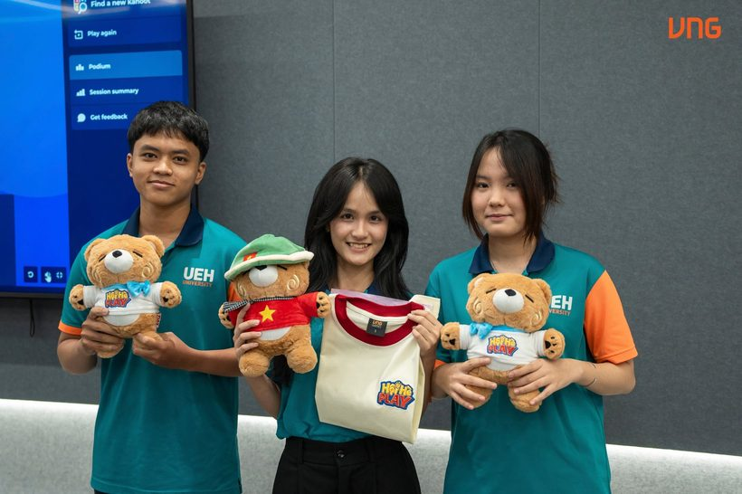
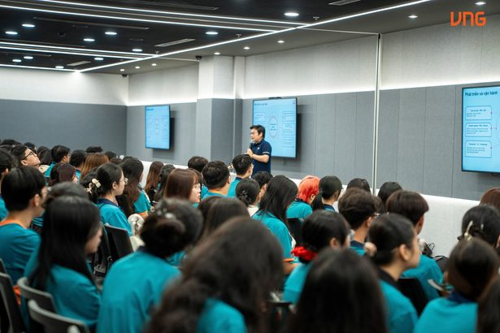
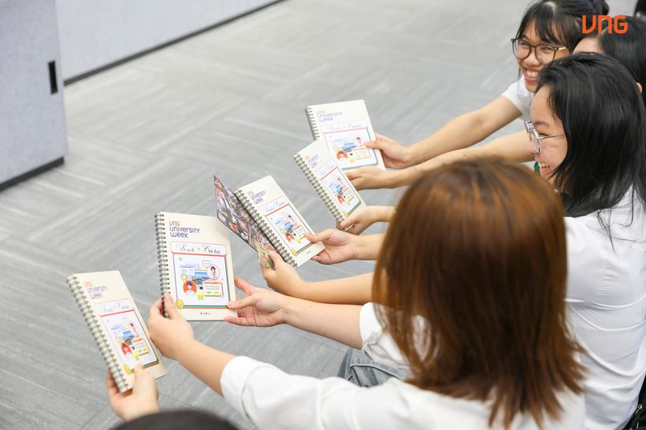

Overview
University Week had three goals: make VNG an attractive tech workplace for students, build partnerships with HCMC universities with VNU-HCM as the main focus, and grow a fresher talent pipeline.
Six months after joining VNG, I was asked to lead it. I owned the program from planning to results reporting.
What I did
- Strategy & KPIs: set goals and KPIs, designed the agenda and flow, and aligned stakeholders.
- Coordination: worked with 13 universities, 11 industry speakers, 6 HR representatives, and Business Unit, communication, creative and event teams.
- Operations: standardized briefs, checklists, onsite guides and MC scripts; managed budget and risks.
- Data & reporting: tracked KPIs, collected student and speaker feedback, and wrote the final report.
What I brought to University Week 2026
An AI angle in every talk
Pre-event surveys showed students cared most about AI trends, emerging tech and future-ready skills. I made sure all 11 Industry Talks included an AI angle that linked students to real career paths.
ContentTour guide flags
Each group followed a flag, so students stayed together and were easier to guide around VNG Campus.
OperationsA standard setup with a dedicated tech laptop
Every tour used the same setup and one tech laptop, which cut setup time and kept quality consistent across all 11 tours. The Operations score improved compared with Nov 2025.
OperationsThe PM Tour Handbook
One place for timelines, materials, SOPs and checklists for before, during and after each tour, so every tour PM worked from the same playbook.
ProcessChallenges and how I handled them
After the event
- Ran a debrief meeting with the project team to review what worked and what didn't.
- Recognized team members for their contributions.
- Brainstormed ideas for the next season together, and saved the most interesting ones for future planning.
Results
On the day


